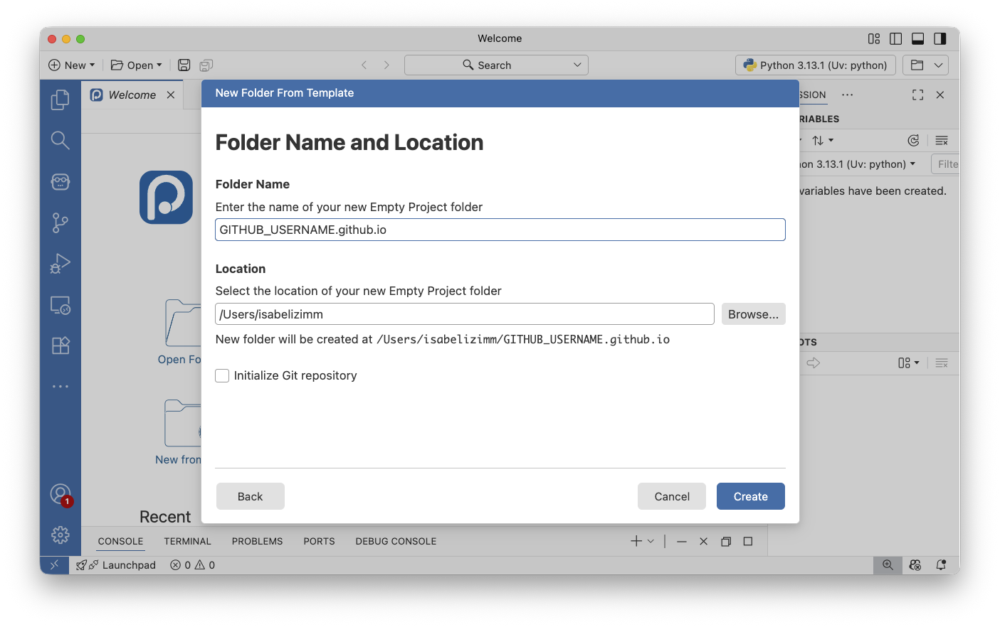
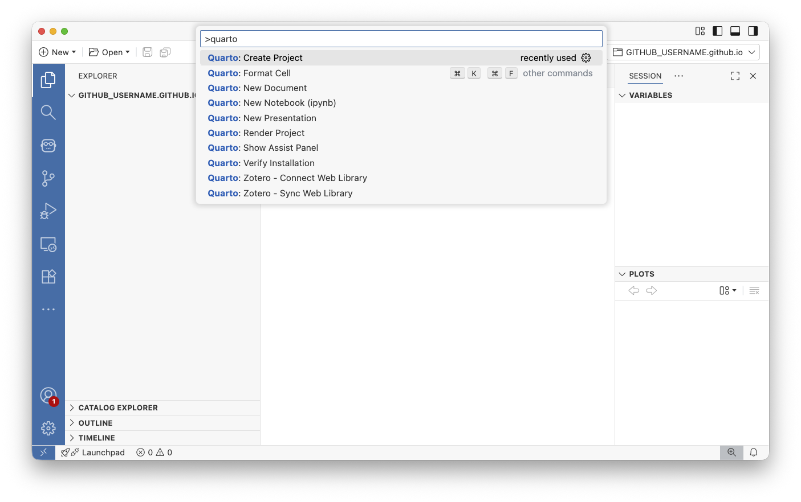
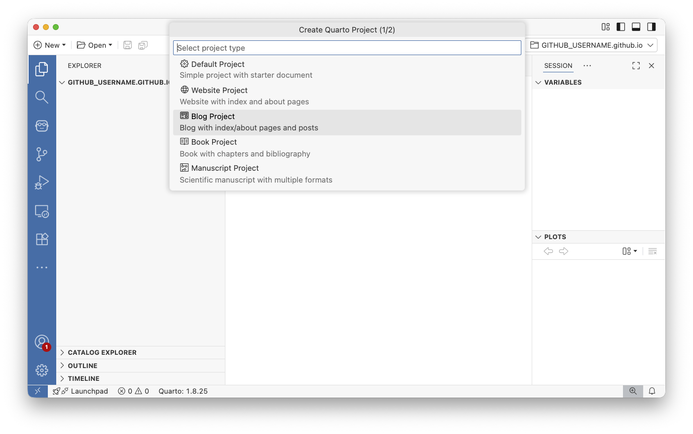
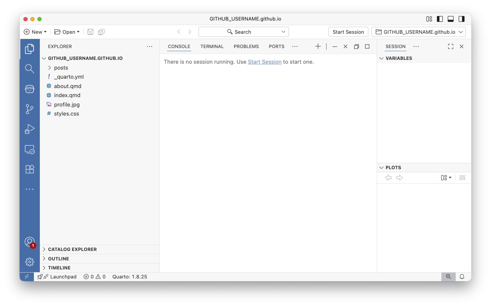
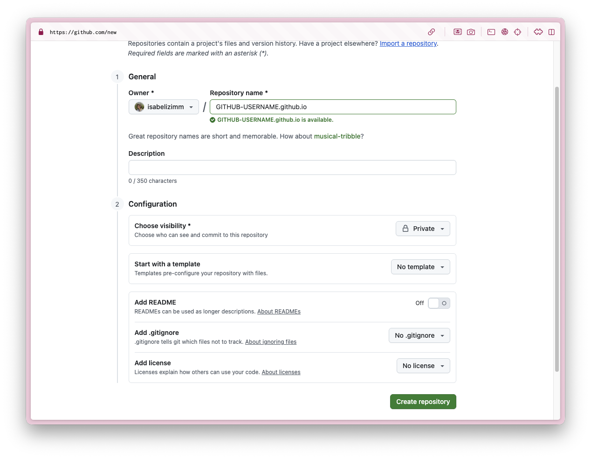
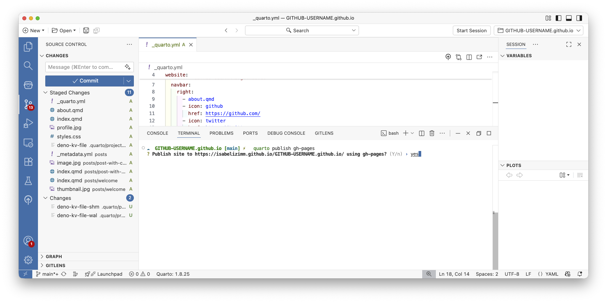
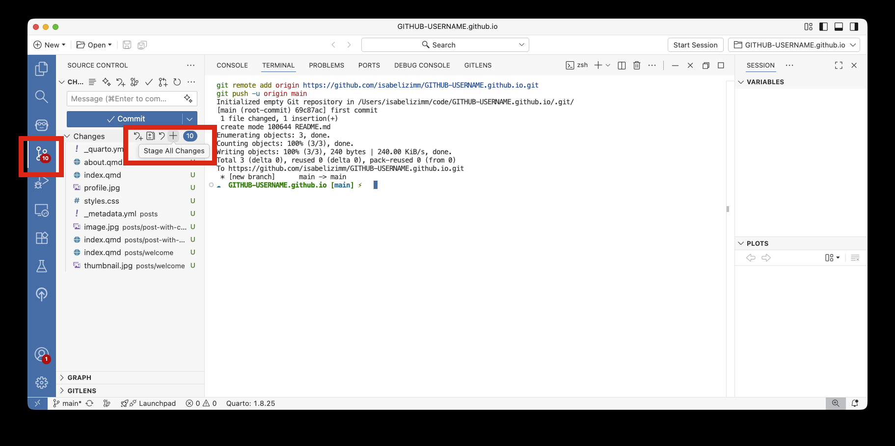
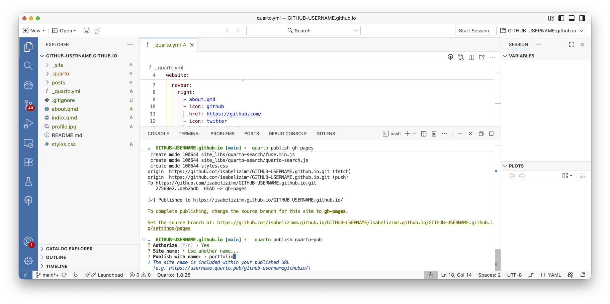

Building a portfolio website in Positron
This blog post was adapted from a workshop I gave for Florida Polytechnic University’s Data Science Club. I have a different post if you’re interested in an IDE-agnostic workflow for building Quarto websites.
Before we get started, you’ll need two things:
- A GitHub or Quarto Pub account for hosting your website. GitHub is free and offers excellent hosting through GitHub Pages. Quarto Pub is also free and specifically designed for Quarto projects. I’d recommend using GitHub if you already have experience with the platform, otherwise use Quarto Pub for the simplest deployment.
- The Positron IDE installed on your computer. Positron is a modern IDE built specifically for data science work. Positron comes with Quarto installed and has specific UI that makes working with Quarto simple.
What is Quarto?
Quarto is a next-generation publishing system that makes it easy to create beautiful documents, websites, and presentations. Combine narrative text with executable code to create reports, blogs, and presentations. Your code output appears right alongside your explanations, making your work reproducible and easy to understand.
What is a Quarto markdown file?
Quarto Markdown (.qmd) files are the core of your website. They combine plain text and markdown for writing narrative content with simple formatting (headings, lists, links, etc.), YAML frontmatter at the top for metadata like title, date, and formatting options, and code chunks that can either be displayed statically or executed when you render the site.
When you render your website, Quarto will execute the code and display both the code and its output on your website. This is perfect for data science portfolios where you want to showcase both your code and its results. Check out the Quarto gallery for inspiration on what’s possible.
Build your website locally
Create new folder from template
Let’s start by creating a dedicated folder for your website project. This keeps everything organized and self-contained. All your blog posts, images, and configuration files will live in one place. In Positron, we’ll use the built-in project creation tools to set up this folder structure properly.

Choose empty project
When Positron asks what type of project to create, select “Empty Project.” Starting with an empty project gives us a clean slate to build our blog. This also will make Positron open your new folder automatically.

Name your folder
Now comes an important naming decision. If you plan to host your site on GitHub Pages, name this folder GITHUB-USERNAME.github.io, replacing GITHUB-USERNAME with your actual GitHub username.
For example, my GitHub username is isabelizimm, so I’d the folder isabelizimm.github.io. This specific naming convention tells GitHub to automatically host your site at https://janedoe.github.io. If you’re using Quarto Pub instead, you can choose any name you like.

View new folder
Great! Positron has created your project folder and opened it as your active workspace. You should see a clean, empty project structure in the file explorer on the left side of the window. You’ll know you’re in the right place because you’ll see the name of your folder in the top left corner.
This folder is now the root directory of your future website. Everything we create from here will be relative to this location.

Click on “Search bar at the top”
Now we’ll use Positron’s command palette. This is a super-powered way to navigate through many of the IDE features. Click on the search bar at the top of the window. From here, select Show and Run Commands to open the full command palette where we can find Quarto-specific commands. You can also open the Command palette using the keyboard shortcut (Ctrl+Shift+P on Windows or Cmd+Shift+P on Mac).

Run Quarto: Create Project
In the command palette that appears, type Quarto: Create Project and select this option from the list. You don’t need to type the whole thing—Positron will filter the commands as you type.
This command launches Quarto’s project creation wizard, which will walk us through setting up a proper Quarto blog structure with all the necessary configuration files.

Create Blog Project
Quarto gives you two main options here: Website or Blog. You can always switch this later, a blog can become a website or vice versa. To help you choose:
- Blog: Perfect for a portfolio site where you’ll be publishing dated posts, articles, or project write-ups. When I was a student, I would create a new blog post each class to take notes! It was a really nice way to organize and display information, and I had a nice course portfolio at the end of each semester.
- Website: Better for static content like documentation or a simple landing page.
For a portfolio showcasing your data science projects, a blog is usually the better choice.

Populate website in your GITHUB-USERNAME.github.io directory
When prompted to select a directory, navigate to and select the folder you created earlier—the one named GITHUB-USERNAME.github.io (or whatever you named it if not using GitHub Pages).
Quarto will populate this folder with a complete blog template, including sample posts, configuration files, and styling. This gives you a fully functional blog right out of the box that you can customize however you’d like.

See your beautiful blog!
Congratulations! You now have a fully functional blog structure. Take a moment to explore the files Quarto created:
_quarto.ymlis the core configuration file of your website. This is where you’ll customize your site’s title, navigation menu, theme, and other global settings.- Files ending in
*.qmdare Quarto Markdown files—these are your actual blog posts and pages. Each.qmdfile becomes a page on your website. - The
posts/directory contains your blog posts, each in its own folder. index.qmdis your homepage.
To preview your site, open any *.qmd file and click the Preview button in the top right. Positron will render your site and open it in a browser window.
In the _quarto.yml file, there is a line that says something like site-url: https://your-website-url.example.com. In order to publish properly, you’ll need to delete this line. Failure to do so may cause errors at time of deployment!

Deploy your site
Now that you have a blog locally, it’s time to share it with the world! The deployment process differs slightly depending on whether you’re using GitHub Pages or Quarto Pub.
Create repository for your blog
First, head to GitHub and create a new repository. This is crucial: the repository must be named exactly your-username.github.io, where your-username matches your GitHub username exactly. This special naming convention tells GitHub to treat this as a GitHub Pages site and host it at that URL. Make sure to create it as a public repository. GitHub Pages only works with public repos on the free tier.

Copy command from GitHub
After creating the repository, GitHub will show you a setup page with several commands. Look for the section titled “…or push an existing repository from the command line” and copy those commands.
These commands will connect your local blog folder to your GitHub repository and push your files up to GitHub.

Paste command in terminal
Back in Positron, make sure you’re in the TERMINAL tab at the bottom of the window (not the CONSOLE tab, which is for running R or Python code).
Paste the commands you copied from GitHub and press Enter. This will initialize a git repository in your folder, connect it to GitHub, and push your files. You may be prompted to log into GitHub, follow the authentication flow if needed.

Publish blog to GitHub Pages
It is time to publish your blog! In the terminal, run:
quarto publish gh-pagesThis command does several things automatically:
- Renders your entire website
- Creates a special
gh-pagesbranch in your repository - Pushes the rendered HTML files to that branch
- Configures GitHub Pages to serve your site
Quarto will ask for confirmation—type ‘Y’ and press Enter. In a few moments, your site will be live on the internet.

Configure GitHub Pages settings
Almost there! Go to your GitHub repository in your browser, click on Settings → Pages (in the left sidebar).
Under “Source,” select “Deploy from a branch” and choose the gh-pages branch from the dropdown. Leave the folder as / (root).
Click Save. GitHub will now automatically serve your website whenever you update it. Your site will be live at https://your-username.github.io within a few minutes!

Send your source code to GitHub
There’s one final step: pushing your source files (the .qmd files) to GitHub’s main branch. This is separate from the gh-pages branch that contains your rendered HTML.
In Positron’s Source Control panel (the icon that looks like a funky Y with circles), you’ll see all your files listed. Click the + icon to stage all changes, add a commit message like “Initial blog setup,” and click the checkmark.
Then click “Sync changes” to send your source files to GitHub. Now both your source code and your rendered website are safely stored on GitHub!

Publish blog to Quarto Pub
Quarto Pub is slightly simpler than GitHub Pages, but has the drawback of not hosting source code. In the terminal, run:
quarto publish quarto-pubThe first time you do this, Quarto will open a browser window asking you to authorize the connection to Quarto Pub. Follow the prompts to log in and grant permission.
You’ll then be asked to choose a name for your site—this will be part of your URL (like yourname.quarto.pub). Choose something professional and memorable, like portfolio.
That’s it! Your site will be live at https://yourname.quarto.pub/portfolio in seconds. Every time you want to update your site, just run quarto publish quarto-pub again.

What’s next?
Now that your blog is up and running, here are some ideas for next steps:
- Edit
_quarto.ymlto change website titles, themes, and layout - Create blog posts from projects you’ve made
- Include CSS files to customize the design. Tools like Claude and ChatGPT are really great at writing CSS, so you don’t need to be an expert to make the site your own.
Remember, every time you make changes:
- Preview locally to make sure everything looks good
- Run
quarto publish gh-pages(orquarto publish quarto-pub) to update your live site - Commit and push your source files to GitHub (if using GitHub)